A cooperative directory for creative work.
Artist-owned. Every discipline.
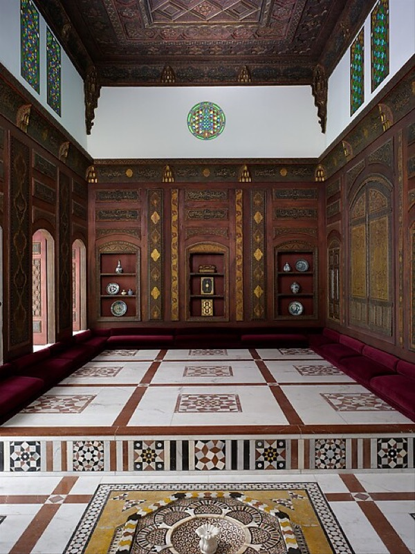
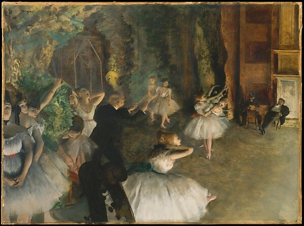
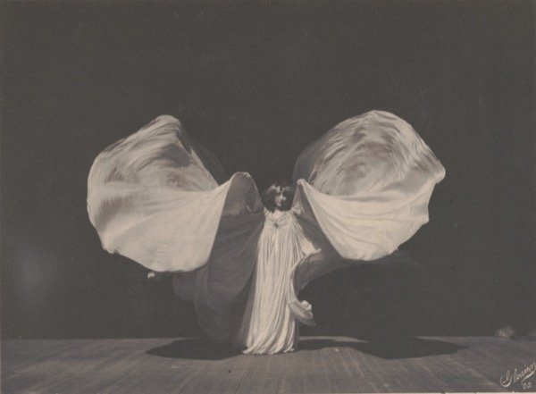
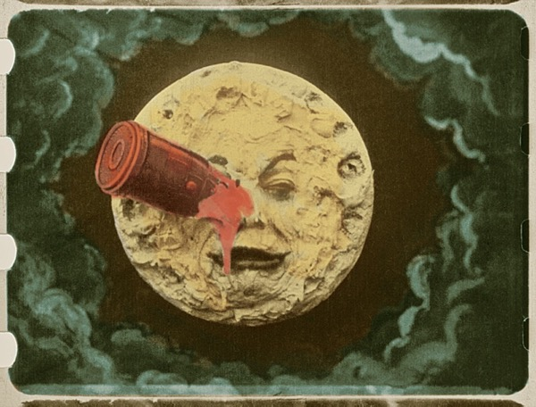
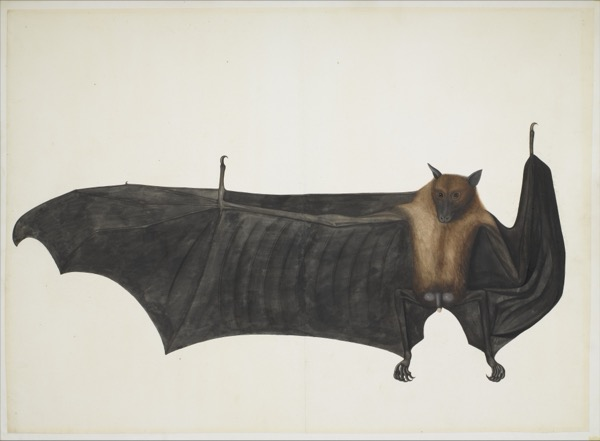
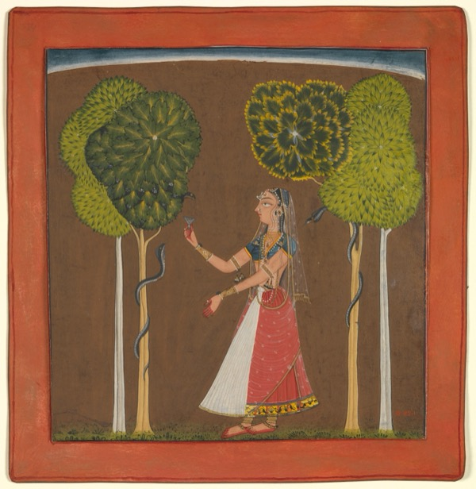
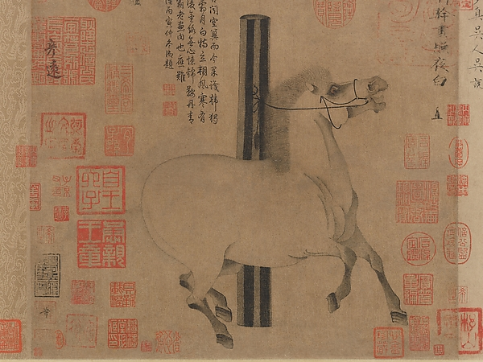
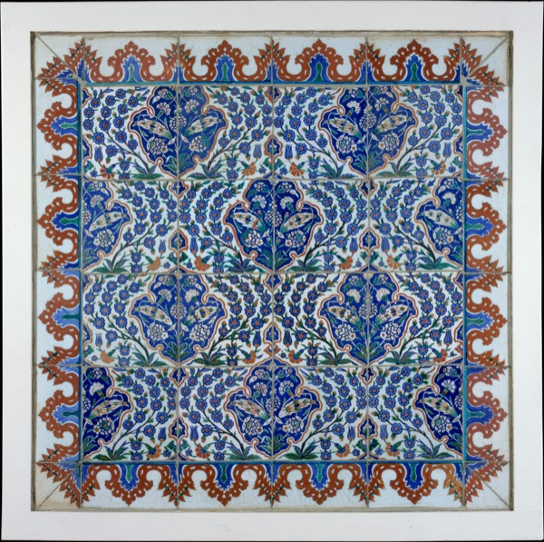
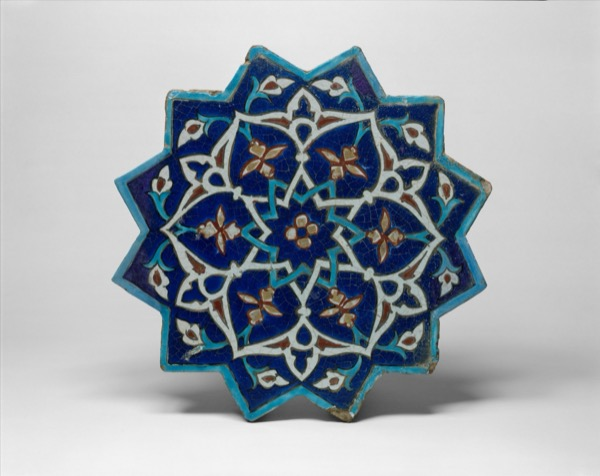
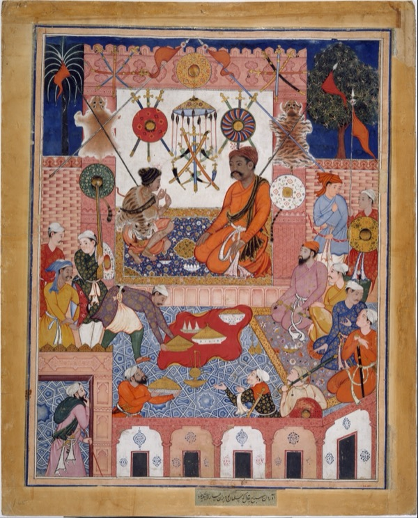
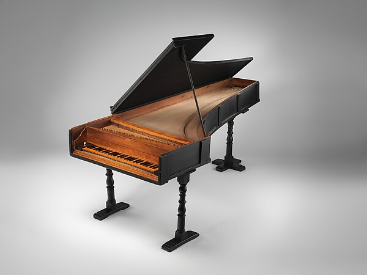
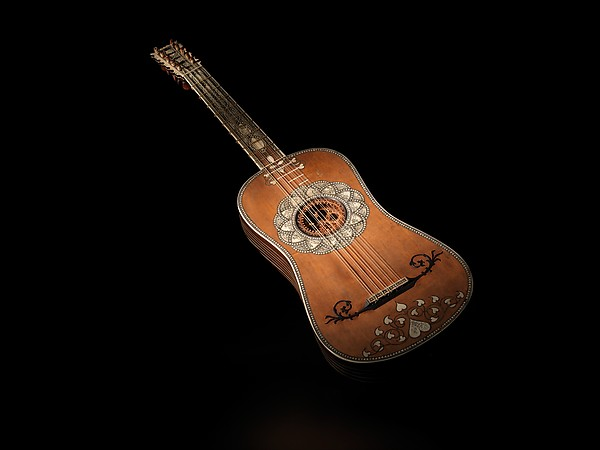
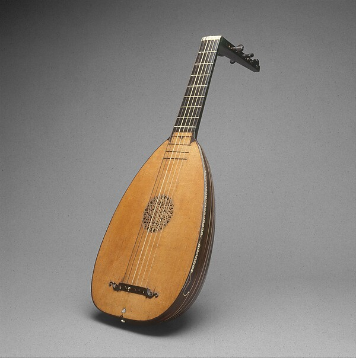
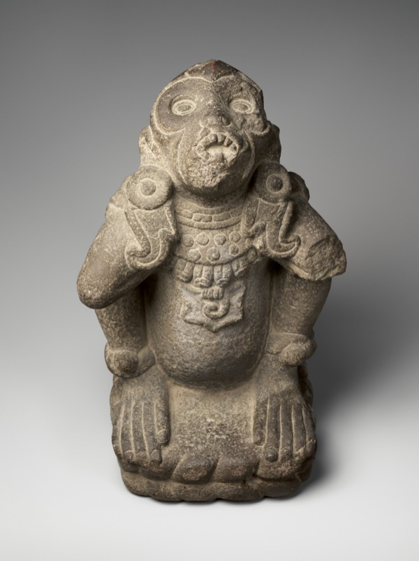
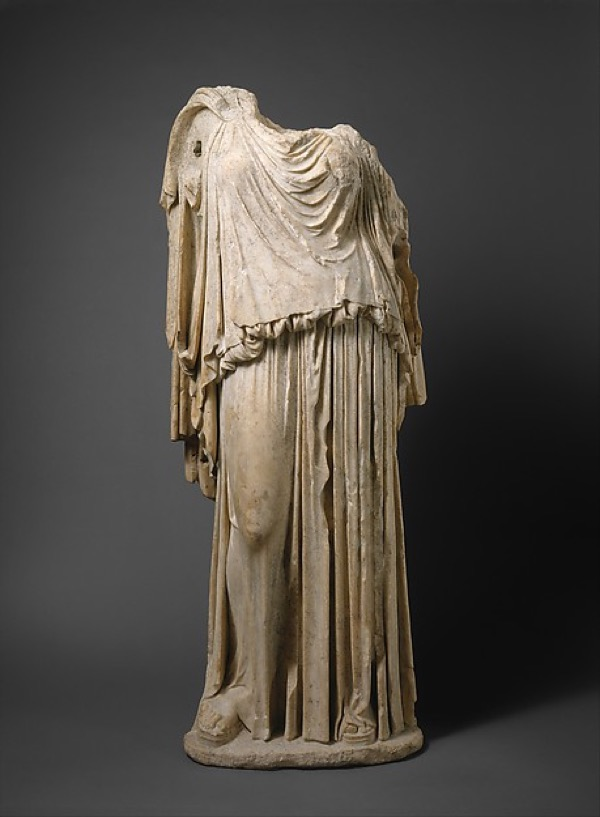
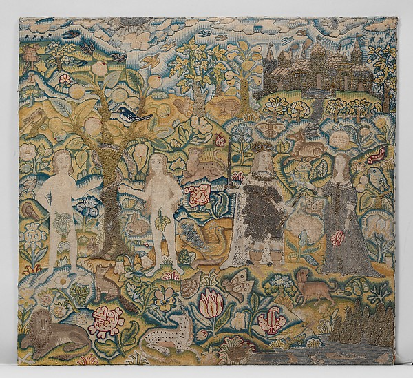
A searchable, browsable directory where curators, collectors, and fellow artists can explore creative work across disciplines. Not a marketplace — a map.
Your work, exhibitions, collaborations, and professional network — assembled in a single catalog that makes the connections between artists visible and navigable.
You own your data. You govern the platform. If you leave, your data is deleted. No training without consent. Revenue flows to contributors.
A structured profile of your work, exhibitions, collections, and collaborations — maintained by you, enriched by public data sources when available.
You decide what's shown. No scraping, no training, no surprises. Your visual identity belongs to you.
A persistent, portable URI that links your existing identifiers across systems. An ORCID for artists.
Visual art, music, film, architecture, performance. One artist, one catalog, every medium.
Artists join as cohorts — groups built around existing connections, led by early adopters. Starting in NYC, expanding along international networks.
Two decades at the intersection of arts, architecture, and urban planning. Socrates Sculpture Park, Powerhouse Arts, BAM, NYC Dept. of Cultural Affairs. BA Yale, MA Columbia.
Performer, choreographer, writer. Bessie Award-winning Bronx Gothic. 2018 MacArthur Fellow. BA Yale.
Neuroscientist, Champalimaud Foundation (Lisbon). Open-source museum data pipelines and identifier resolution.
Katie Dixon & Okwui Okpokwasili. The originating vision: cooperative framing, Pod-based onboarding, NYC pilot. March 2026.
Zach Mainen. Data architecture: auto-populate from museum collections, identifier reconciliation, multi-disciplinary catalog. May 2026.